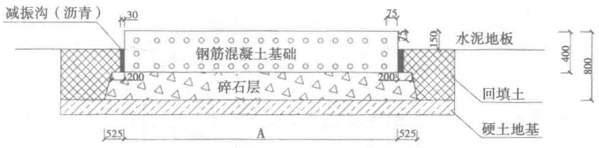
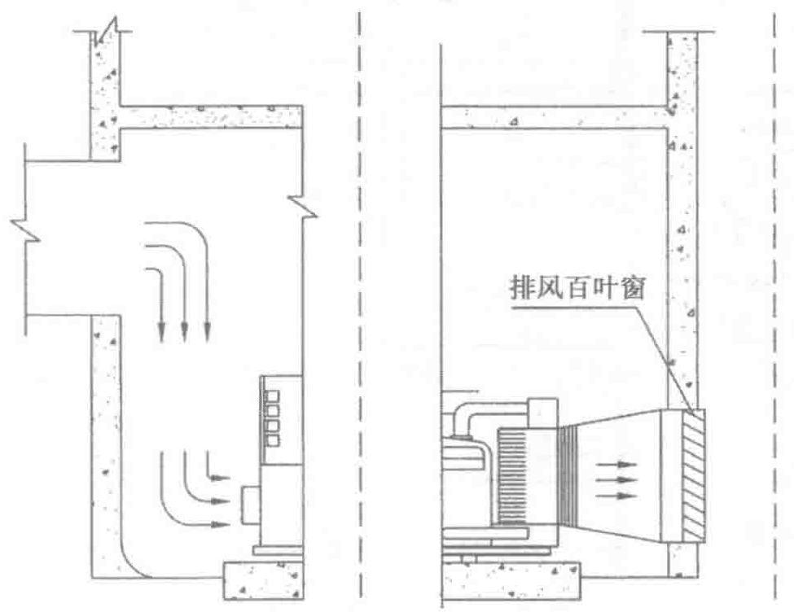

2. 供油管道系统
供油燃油管道应采用耐腐蚀无缝钢管，管道采用三布五油工艺处理措施。管道主供油段宜按双环路系统设计，避免因室外路由在复杂地质环境下引起因供油不畅导致的断油危险。
供储油简单管道系统如图5-16所示。
日用油箱组件如图5-17所示。
5.6 发电机房进排风及消声降噪的处理
柴油发电机组噪声产生的声源很复杂，从产生的原因和部位可分为：排气噪声、机械噪声、燃烧噪声、冷却风扇、排风噪声、进风噪声和发电机噪声。
5.6.1 机组运行时所产生的噪声声源分析
1. 排气噪声
排气噪声是一种高温、高速的脉动性气流噪声，是发动机噪声中能量最大，成分最多的部分，比进气噪声及机体辐射的机械噪声要高得多，是发动机总噪声中最主要的组成部分。它的基频是发动机的发火频率。